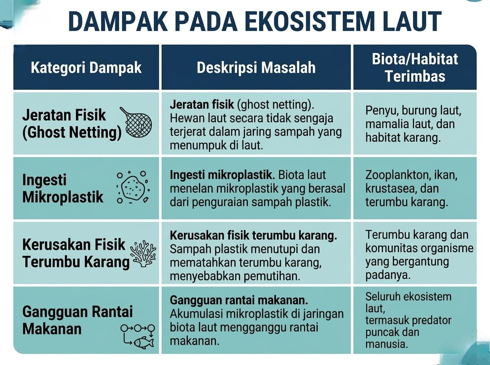

Selamatkan Laut Kita Dari Bahaya Sampah Laut. Pelajari, Dampak, dan Ambil Tindakan untuk Masa Depan yang Lebih Bersih.
Sampah laut adalah limbah padat yang dihasilkan manusia dan masuk ke lingkungan laut baik sengaja maupun tidak. Sampah ini mencakup plastik, jaring, dan berbagai material lain yang berdampak serius terhadap ekosistem laut.
